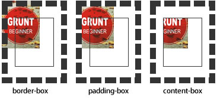

语法：
background-clip:border-box | padding-box | content-box | no-clip
说明：
background-clip:用来将背景图片做适当的裁剪以适应实际需要
语法参数：分别表示从边框、内填充、内容区域向外裁剪背景，no-clip表示不剪切，和参数border-box显示相同的效果，默认值border-box
使用方法：
div{
background:#ccc url(...) no-repeat;
background-clip:border-box;
}
兼容性：
- 浅绿 = 支持
- 红色 = 不支持
- 粉色 = 部分支持
| Values | IE | Firefox | Chrome | Safari | Opera | iOS Safari | Android Browser | Android Chrome |
|---|---|---|---|---|---|---|---|---|
| Basic Support | 6.0-8.0 | 2.0-3.6 | 4.0+ | 3.1+ | 15.0+ | 3.2+ | 2.1+ | 18.0+ |
| 9.0+ | 4.0+ | |||||||
| text #1 | 6.0-11.0 | 2.0-38.0 |
事例：
div{
width:220px;
border:20px solid #000;
padding:20px;
font-weight:bold;
color:#000;
background:#ccc url(images/1.png) no-repeat;
background-clip: content-box;
}
